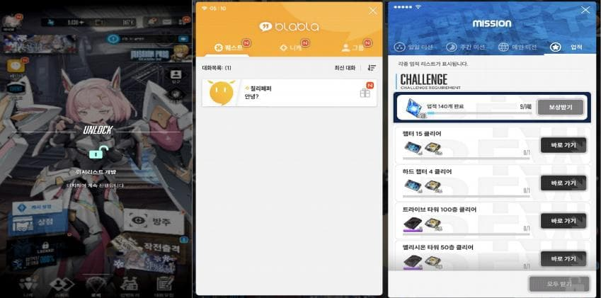
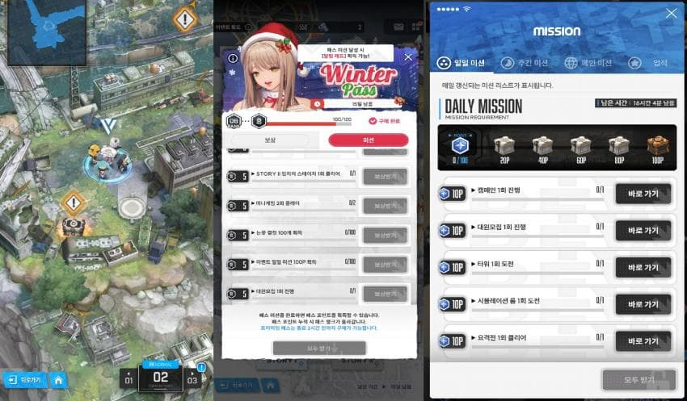
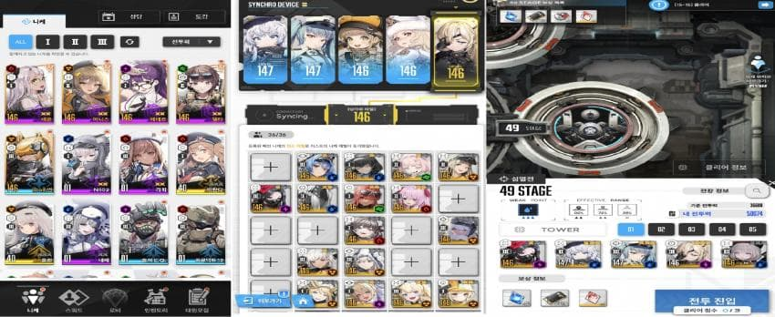
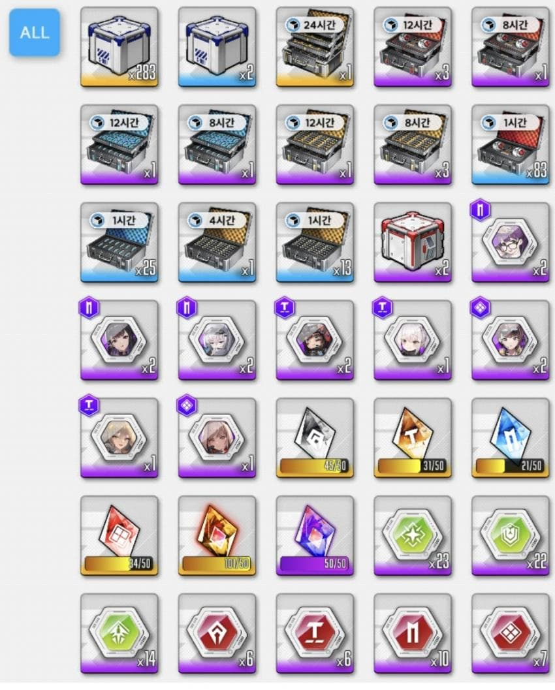
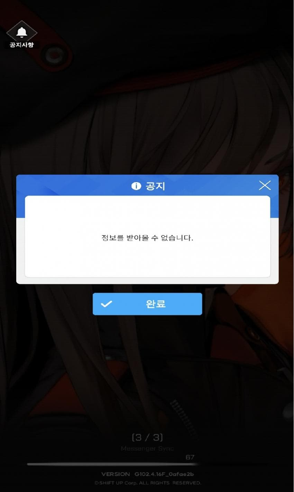
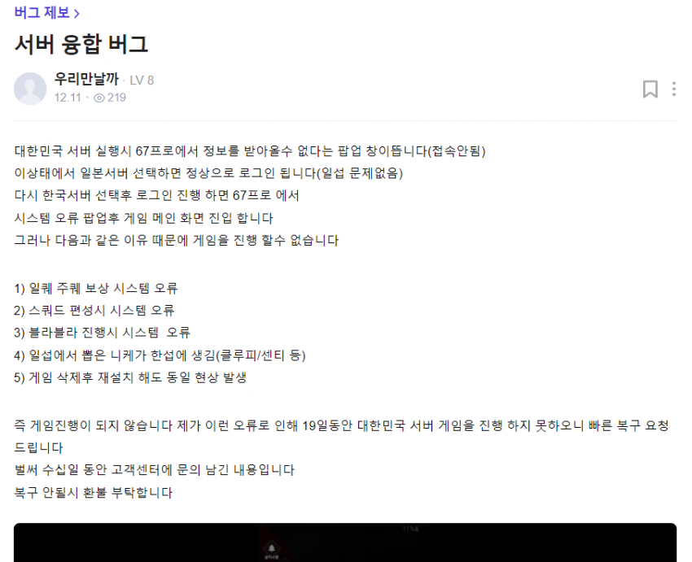

세줄요약있음
1. 서버 융합 버그란 무엇인가?
서버 융합버그란 한 계정으로 두개 이상의 서버를 이용하는 유저들을 대상으로 랜덤으로 발생하는
서버간의 데이터 융합으로 인해 발생되는 버그로 데이터 수집 결과 주로 한국에 본서버를두고 이후 일본서버를 만든 유저들이 걸리는듯하며
기존의 그 어떤버그와도 궤를 달리하는 좆같음을 선사한다
2. 그럼 서버 융합에 걸리면 어떤 증상이 발생하는가?
우선 서버 융합 버그에 걸린 계정의 "본서버"로 들어가게 되면 아래와 같은 상황을 관찰할 수 있다.

접속시 이전에 클리어 했던 컨텐츠의 개방알람이 우수수 쏟아지며 블라를 눌러보면 기억소거당한 니케 마냥 모든 블라가 초기화 되어있다.
또한 미션을 살펴보면 스토리 스테이즈 클리어 정보를 제외하고는 모든 컨텐츠의 미션이 초기화되어 있는것을 확인 할 수 있다.
그렇다면 개꿀아닌가? 미션과 보상을 처음부터 다시 받을수있게 형태가 일부 유저에게 선물한 서프라이즈는 아닐까?
형태가 그렇게 호락호락하노?

블라에서 유추할 수 있듯이 기존 클리어한 호감도(13지부턴아님ㅋ)퀘스트들이 모두 재생성되는데 가까이가면 오류뜨면서 메인화면으로 가지며
더이상 일일미션과 이벤트 미션을 수행할 수 없게 되고 폐광 선언을 받으며
클리어 데이터가 인식되지 않기 때문에 이로 인하여 모든 패스를 더이상 받을 수 없게 된다.
패스는 앞으로 안사고 어차피 숙제보상 좆도없는데 그냥 겜이나 즐기면 되는거 아닐까?
물론 이게 전부가 아니다

제일 왼쪽 니케들을 살펴보면 40레벨 미란다와 솔린이 눈에 띌것인다. 쟤내는 왜 40렙으로 따로 올려져있을까?
능지가 딸려 초기화를 까먹은것일까?
저 두 캐릭터는 버그에 걸린사람의 본섭에 존재하지 않으며 일본서버에서 보유하고 있는 캐릭터가 옮겨온 것이다.
그렇다면 사용할 수 있는 것인가?
물론 사용할 수 없다.
사용하려하면 오류가 발생하며 메인화면으로 이동한다.
이 문제는 새로 옮겨져온 니케에만 발생하는것이 아니라 부서버에 존재하던 모든 니케에 적용된다
가운데 싱크로 디바이스를 보면 36/36으로 모두 채워져있다고 나오나
저 빈자리는 모두 부서버에 존재하는 니케들이 본서버에 겹치며 사용할 수 없게된 니케들의 묘지이다
즉 자리는 차지하지만 뺄 수 없고 사용도 불가능하게 된 니케들의 흔적이라 할 수 있다.
이러한 문제점 때문에 파견에서조차 사용할 수 없어
자동파견을 보내면 오류가뜨고 일일히 하나씩 본서버에만 존재하는 니케로 수행해야하며
기업타워또한 32333이라는 기적의 노버스트 조합을 사용해서 니케들의 기본 피지컬에만 의존하는 순수한 싸움을 수행해야 하게 된다.
만약 부서버에 있는 니케 풀이 넓거나 홍련같은 캐릭이라도 가지고 있던 사람이라면.. 본서버의 사형선고라 할 수 있다.
부서버에 sr만 있는사람은 큰상관 없지 않나? 좀 귀찮아도 SSR만쓰면 겜은 할수있지않을까?
물론 문제는 더 있다

겹치는 것은 니케뿐만이 아니기 때문이다
인벤토리를 살펴보면 각종 sr의 스페어 바디가 들어와 있는것이 보인다.
앞선 니케의 경우와 같은 맥락으로 두 서버에 중복되거나 건너온 아이템은 모두 사용이 불가능하다 즉
1시간짜리 크레딧, 배틀데이터, 코더, 몰드 등 부서버에 있던 아이템이라면 수치가 합쳐지며 사용이 불가능해진다.
더이상 성장할 수 있는 방법이라곤 전초기지의 니케들이 긁어모어오는 쪼가리들 뿐이게 된다는 의미이며
좆같지만 희망을 주는 몰드 또한 그저 관상용 아이템이 되어버린다.
그리고 이 버그의 최후는 다음의 한짤로 요약된다

이 버그의 가장 무서운점은 침식되는 니케마냥 시간이 지날수록 점점 더 심해지면서
결국 본서버 접속 불가로 이어지는 것이다.
3/3 Messenger Sync 67
이 고정적인 화면은 당신이 앞으로 맞이하게 될 미래이다.
부서버에 접속은 문제가없다 허나 그게 무슨의미가 있을까?
이렇듯 서버 융합 버그는 당신의 전초기지에서의 삶을 한순간에 파멸로 이끌수 있는 무서운 버그이다
3.그렇다면 이버그의 해결방법은 없을까?
물론 이러한 버그를 맞이했을때 대응 할 수 있는 방법이 아주 없는것은 아니다.
첫째로.
간단히 서버에서 로그아웃 후 니케를 완전히 종료하고
다시 니케를 실행하여 바로 본서버에 접속하는것이다.
아직 침식이 심하지 않은 상태라면 이 방법으로 문제가 완전히 해결되며
침식되어온 니케와 아이템이 모두 사라진다.
이러한 융합버그가 발생했을 때 가장 편리한 방법이며 이 방법으로 해결되었다면 당신은 운이 매우 좋다.
둘째로
침식이 진행되어 첫번째 방법으로 해결이 안됬으며 마지막 본서버 접속 불가짤을 반복적으로 맞이하는 경우
부서버에 접속한 뒤 로그아웃을 실행하고 바로 로그인을 한 뒤에 바로 본서버에 접속을 시도하는 것이다.
이 경우 본서버에 접속이 진행되며 다만 앞서 언급한 모든 버그는 그대로 다시 발생하고 그저 "접속"만 가능하게 되는 해결 방법이다
그렇다면 이 문제의 완전한 해결 방법은 무엇일까?
그런건 없다 게이야!!
니가잃어버린 니케들
무슨일이있어도! 절대!!
돌아오지 않는다!!!
라운지의 이러한 버그를 겪는 사례의 환자를 살펴보면 다음과 같다

자그마치 오늘기준으로 21일동안 서버에 접속조차 못하고있는 희생자가 존재하는걸 보면
지금 이 서버융합 버그 말기 환자라면 희망이 없어보인다.
모든 인게임 스샷은 직접 촬영했으며 본인은 이 버그말기에 걸린지 이틀차다.
그동안 지른돈 다 내놔 씨발!!!!
이버그를 겪고있는 모든 환자들.. 힘내자
그리고 아직 겪지 않은 너희들...
살아라
세줄요약
1. 서버융합버그는 한 계정으로 두개 이상의 서버를 이용하는 유저를 대상으로 랜덤으로 발생하는 아주 좆같은 버그이다.
2. 서버융합 버그에 걸렸을 때 본 서버의 블라, 미션등이 초기화 혹은 상대 서버의 데이터가 복사되며 서버에 중복되는 니케와 아이템은 사용이 불가해진다
3. 서버융합 버그에 걸렸을 때 시간이 지날수록 침식이 심해지며 일정단계가 지나면 현재 시점에서 해결방법은 없다
심각한 버그이니 만큼 모두가 인지할수 있고 수정이 빨리 될 수 있도록 널리퍼트려줘.. 개추부탁함